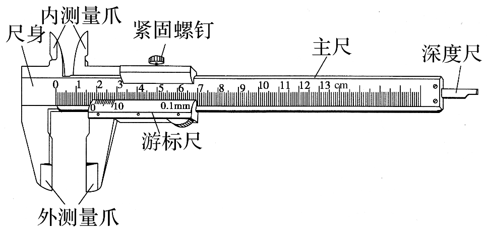
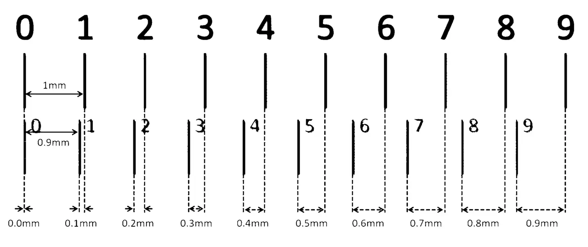
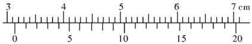
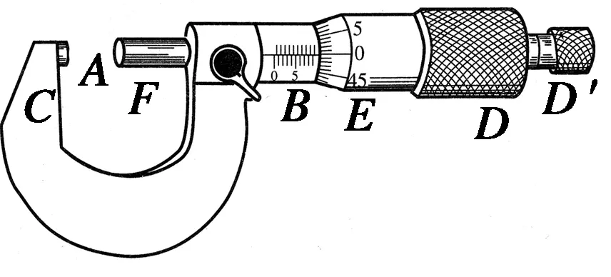
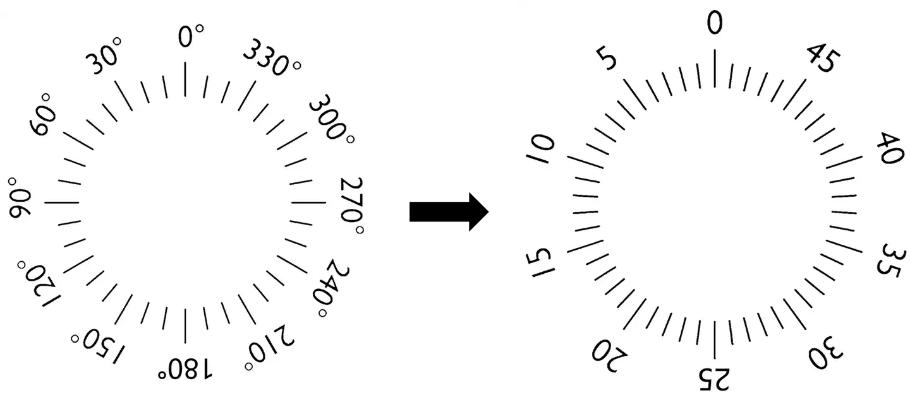

实验：导体电阻率的测量
电磁学
电路
测量工具的使用
游标卡尺

构造：主尺、游标尺
用途：测量厚度、长度、深度、内径、外径
原理：利用主尺的单位刻度与游标尺的单位刻度之间固定的微量差值来提高测量精度
| 刻度格数(分度) | 刻度总长度 | 1\;\mathrm{mm}与每小格的差值 | 精确度(可精确到) |
|---|---|---|---|
| 10 | 9\;\mathrm{mm} | 0.1\;\mathrm{mm} | 0.1\;\mathrm{mm} |
| 20 | 19\;\mathrm{mm} | 0.05\;\mathrm{mm} | 0.05\;\mathrm{mm} |
| 50 | 49\;\mathrm{mm} | 0.02\;\mathrm{mm} | 0.02\;\mathrm{mm} |

- 读数：若 x 表示为主尺读出来的毫米数， K 表示为副尺上读出与主尺上某一刻线对齐的游标刻线的格数，则记录结果表达为 (x+K\times 精确度)\; \mathrm{mm}。
注意事项
- 游标卡尺是根据刻度线对齐来读数的，所以不需要估读，但读数要注意最小精确度所在的位数，如果读数最后一位是零，该零不能去掉。
- 读数时，要注意游标尺第几条刻度线(不含零刻度线)与主尺对齐。
读数练习
变式
有一种新式游标卡尺，它的刻度与传统的游标卡尺明显不同–刻度看起来很“稀疏”，使用时读数显得清晰明了，便于使用者正确读取数据。新式游标卡尺的刻度也有 10 分度、20 分度、50 分度三种规格，但刻度却是 19\;\mathrm{mm} 分成 10 等分，39\;\mathrm{mm} 分成 20 等分，99\;\mathrm{mm} 分成 50 等分。以“39\;\mathrm{mm} 分成 20 等分”新式游标卡尺为例，如图，试分析其精确度是 \underline{\qquad}\;\mathrm{mm}，如图的读数是 \underline{\qquad}\;\mathrm{mm}。

螺旋测微器

- 构造：A 测砧、B 固定刻度、C 尺架、D 旋钮、D' 微调旋钮、E 可动刻度、F 测微螺杆
读数原理
通过测量角度，进而得到对应的长度 
- 读数：测量值(\mathrm{mm})=固定刻度数(\mathrm{mm})+可动刻度数\times 0.01\;\mathrm{mm} (可动刻度数要估读)
注意事项
- 固定刻度数读数时要注意半毫米刻度线是否露出，露出来了就算，没露出来就不算。
- 可动刻度数要估读到下一位。读数时估读到千分之一毫米，因此，螺旋测微器又叫千分尺。
读数练习
电压表和电流表的读数
金属丝电阻率的测量
误差分析
- 系统误差：由于实验设计产生的误差，无法通过多次测量减少
- example：电流表分压、电压表分流导致的误差
- 偶然误差：可以通过多次测量取平均减少的误差
- example：直尺、螺旋测微器、电表读数误差